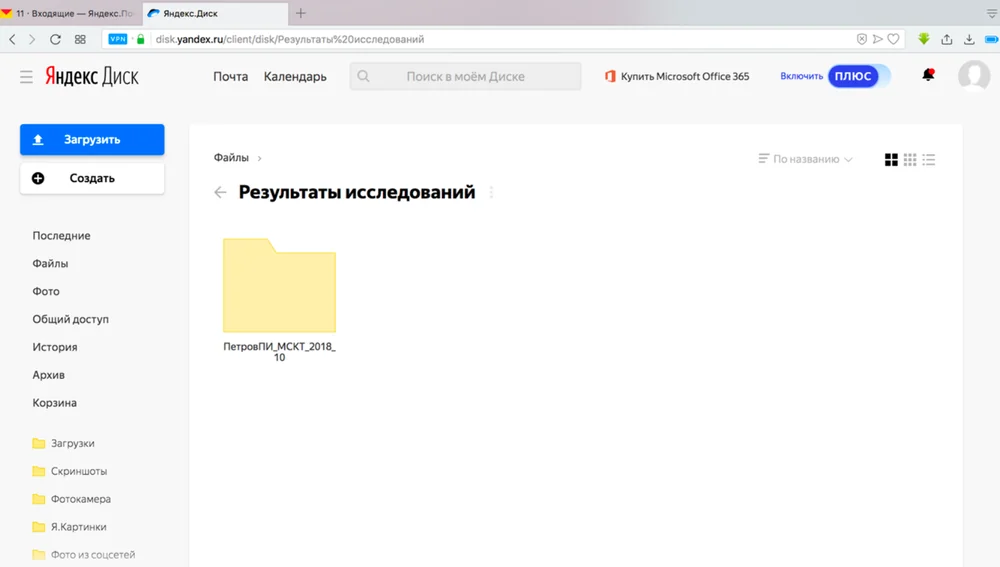
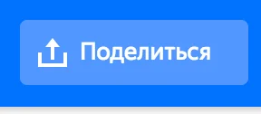
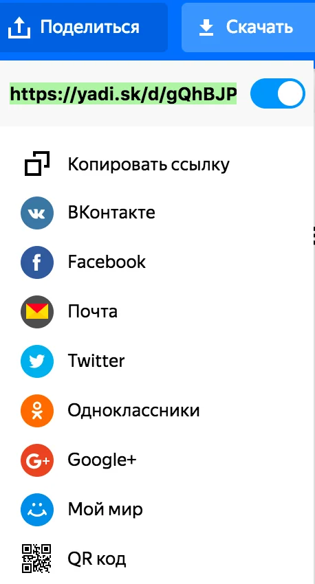
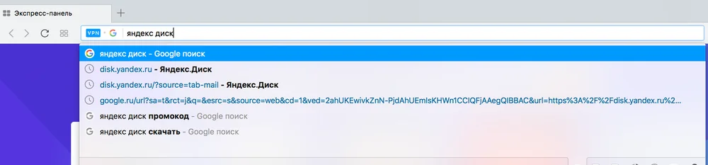
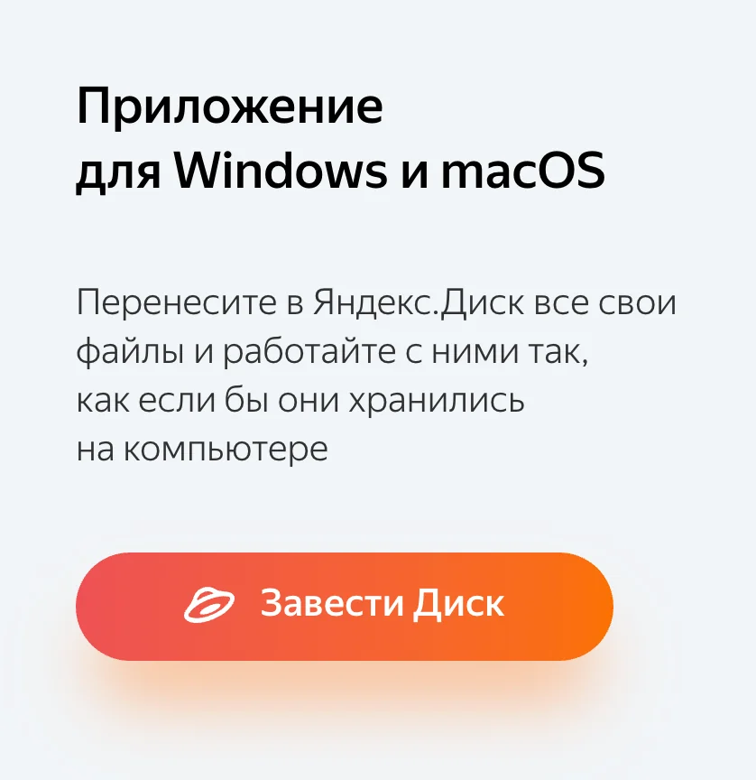
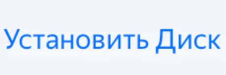
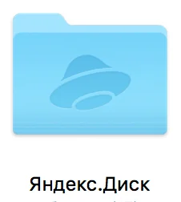

Как отправить результаты исследования (КТ, МРТ, рентген) врачу.
КАК ОТПРАВИТЬ?
Как отправить результаты исследования врачу?
Современное развитие коммуникационных и цифровых технологий даёт широкие возможности для обмена информацией.
Результаты мультиспиральной компьютерной томографии (МСКТ, КТ) и магнитно-резонансной томографии (МРТ), цифровой рентгенографии имеют важное значение для диагностики.
Необходимо отметить, что данные исследования не всегда являются исчерпывающими для установления правильного диагноза. Неверная трактовка без оценки клинической картины, осмотра пациента и истории заболевания часто приводит к ложным заключениям.
Вместе с тем предварительная оценка результатов данных исследований позволяет больше внимания уделить клинической картине и свести к минимуму технические сложности. Например, чтение результатов исследований, записанных на диск, требует от 5 до 30 минут. Возможны ошибки при записи или повреждение диска, что в дальнейшем может потребовать повторного визита.
Шаг 0 · подготовка
Скопируйте данные с диска
Для отправки данных исследований необходима вся информация, содержащаяся на диске. Наиболее важны файл DICOMDIR и папка DICOM.
Для открытия диска в системе Windows необходимо нажать правую кнопку мыши на иконке дисковода и выбрать «Открыть» («Автозапуск» выбирать НЕ НАДО). Затем скопировать файл DICOMDIR и папку DICOM на компьютер.
Чтобы отправить информацию, можно использовать несколько способов:
Вариант 1
Архив и письмо
Папку DICOM сжать (добавить в архив ZIP, RAR) и прикрепить к отправляемому письму.
Вариант 2
Яндекс Диск в браузере
Создать учётную запись на Яндекс Диске и перетянуть папку с файлами прямо в окно браузера (Google Chrome, Safari, Internet Explorer, Opera, Firefox).
Затем вы можете отправить ссылку на результаты исследований врачу:

Выберите нужную папку одним щелчком мыши. Появится окно с кнопкой «Поделиться»:


Скопировать ссылку на папку и отправить её по электронной почте:
Альтернативным вариантом является использование облачных сервисов для хранения и передачи данных (Яндекс Диск, Dropbox и других). Это удобный и простой метод.
Для отправки результатов исследований необходимо скачать программу, которая создаст папку на компьютере для синхронизации с облачным хранилищем данных. На примере сервиса Яндекс:
Задать в любом поисковике или верхней строчке браузера поисковое слово «яндекс диск».

Зарегистрироваться на сервисе и скачать программу-установщик:

Загрузить и установить программу:

После установки программы, ввода логина и пароля на компьютере появится папка:

в которой можно создавать новые папки и переместить туда файлы с результатами исследований.
Затем надо вновь вернуться к браузеру (Google Chrome, Opera, Internet Explorer), где открыта страница Яндекс Диска. Войти в свой аккаунт (ввести логин и пароль). Теперь у вас есть возможность отправить ссылку на результаты исследований врачу:
Выберите нужную папку одним щелчком мыши. Появится окно с кнопкой «Поделиться»:
Затем можно скопировать ссылку на папку и отправить её по электронной почте:
Используя наш сайт, вы даёте согласие на обработку файлов cookie и пользовательских данных. Если вы не хотите, чтобы ваши данные обрабатывались, пожалуйста, покиньте сайт.